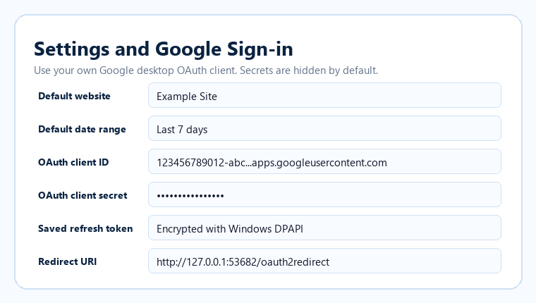

Settings and Google Sign-in

- The client secret is hidden by default in the UI.
- The refresh token is encrypted locally.
- The app silently reconnects on startup when the saved token is valid.
- Google login appears only when the token is missing, revoked, or cannot be refreshed.